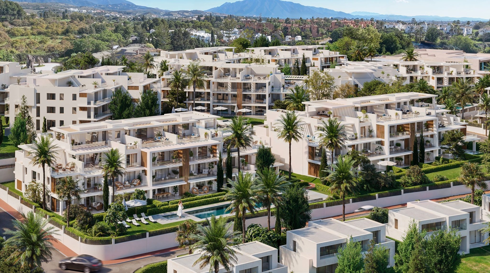
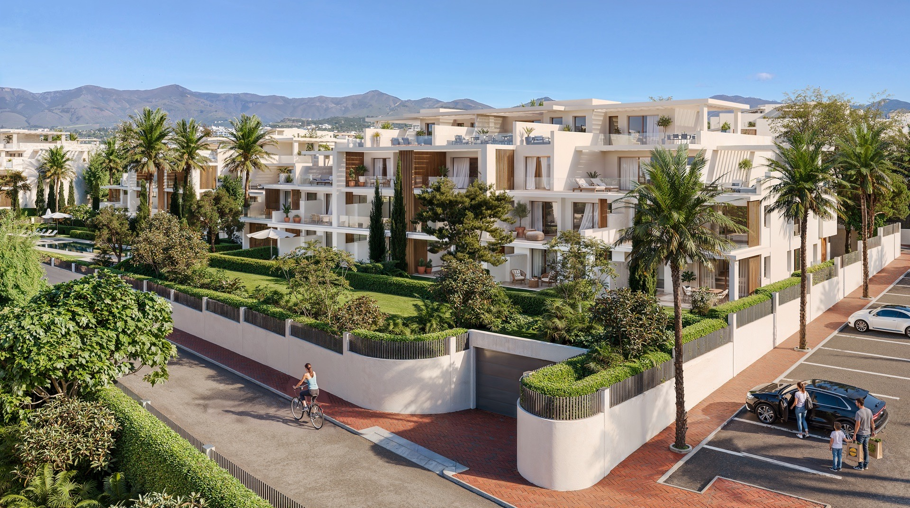
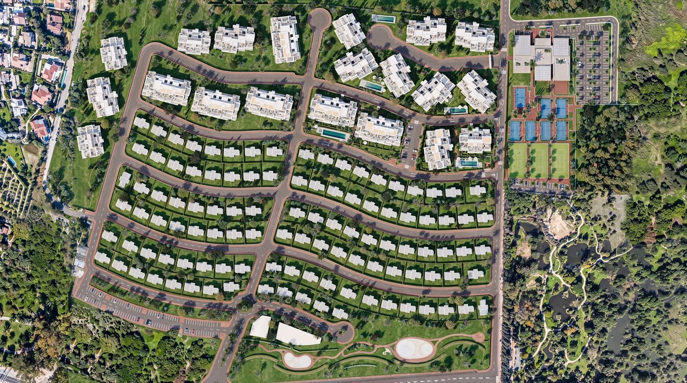

Garden Residences
- Single-level living with direct private outdoor space.
- Large terraces plus gardens on selected homes.
- Two parking spaces and one storage room.

A low-rise collection of garden apartments and penthouses on the New Golden Mile, pairing generous private outdoor space with access to a wider resort setting.
Cancelada Park is a low-rise residential collection on the New Golden Mile. The homes are planned around private terraces, gardens and open living areas, with two parking spaces and a storage room included for each residence.
The location works for buyers who want the coast, Estepona and Puerto Banús within easy reach without living in the middle of a busier town centre. A wider resort plan adds wellness, sport, dining and work facilities nearby.
Explore the architecture, private outdoor spaces and the wider amenity concept. Resort visuals are shown separately so the residential buildings and shared facilities are easy to distinguish.
A short developer-supplied film showing the coastal setting and furnished show-home atmosphere. Final homes, finishes, landscaping and views may vary.
The current release ranges from practical two-bedroom homes to substantial four-bedroom penthouses. The examples below use the supplied price list dated 6 July 2026; exact sizes differ by reference.
Current layouts, view positions and unit availability should be reviewed against the latest developer file before shortlisting.
The supplied release dated 6 July 2026 lists 30 homes as available. Status can change quickly, so Nueva Living reconfirms the chosen references before arranging a viewing or reservation.
| Reference | Floor | Bedrooms | Price | Status | Floorplan |
|---|---|---|---|---|---|
| P7-B1-101 | Ground floor | 4 bedrooms | €1,130,000 | Available | View PDF |
| P7-B1-105 | Ground floor | 3 bedrooms | €799,000 | Available | View PDF |
| P7-B1-106 | Ground floor | 4 bedrooms | €1,180,000 | Available | View PDF |
| P7-B1-116 | First floor | 4 bedrooms | €1,380,000 | Available | View PDF |
| P7-B1-121 | Second floor | 3 bedrooms | €1,600,000 | Available | View PDF |
| P7-B1-122 | Second floor | 4 bedrooms | €1,650,000 | Available | View PDF |
| P7-B1-124 | Second floor | 4 bedrooms | €2,000,000 | Available | View PDF |
| P7-B2-201 | Ground floor | 3 bedrooms | €1,180,000 | Available | View PDF |
| P7-B2-202 | Ground floor | 3 bedrooms | €810,000 | Available | View PDF |
| P7-B2-203 | Ground floor | 3 bedrooms | €810,000 | Available | View PDF |
| P7-B2-204 | Ground floor | 3 bedrooms | €810,000 | Available | View PDF |
| P7-B2-206 | Ground floor | 4 bedrooms | €1,120,000 | Available | View PDF |
| P7-B2-216 | First floor | 4 bedrooms | €1,270,000 | Available | View PDF |
| P7-B2-221 | Second floor | 4 bedrooms | €1,950,000 | Available | View PDF |
| P7-B2-222 | Second floor | 4 bedrooms | €1,635,000 | Available | View PDF |
| P7-B2-224 | Second floor | 3 bedrooms | €1,590,000 | Available | View PDF |
| P8-B1-101 | Ground floor | 3 bedrooms | €1,100,000 | Available | View PDF |
| P8-B1-105 | Ground floor | 3 bedrooms | €1,040,000 | Available | View PDF |
| P8-B1-111 | First floor | 3 bedrooms | €1,400,000 | Available | View PDF |
| P8-B1-113 | First floor | 3 bedrooms | €860,000 | Available | View PDF |
| P8-B1-115 | First floor | 3 bedrooms | €1,100,000 | Available | View PDF |
| P8-B1-121 | Second floor | 3 bedrooms | €1,270,000 | Available | View PDF |
| P8-B1-122 | Second floor | 3 bedrooms | €1,515,000 | Available | View PDF |
| P8-B1-124 | Second floor | 3 bedrooms | €1,450,000 | Available | View PDF |
| P8-B2-201 | Ground floor | 3 bedrooms | €1,080,000 | Available | View PDF |
| P8-B2-204 | Ground floor | 3 bedrooms | €1,060,000 | Available | View PDF |
| P8-B2-211 | First floor | 3 bedrooms | €1,110,000 | Available | View PDF |
| P8-B2-214 | First floor | 3 bedrooms | €1,380,000 | Available | View PDF |
| P8-B2-222 | Second floor | 3 bedrooms | €1,510,000 | Available | View PDF |
| P8-B2-223 | Second floor | 3 bedrooms | €1,530,000 | Available | View PDF |
Guide prices and status transcribed from the developer price list dated 6 July 2026. Prices exclude VAT and other purchase costs and may change without notice. Delivery timing must be confirmed. Nueva Living will reconfirm the selected residence, floorplan, parking, storage, payment terms and legal documentation before you proceed.
A quick indicative estimate only. Confirm exact terms with your lender before making any decision.
Cancelada sits between Estepona and Marbella, with direct access to the coastal road and the beach close by. It offers a calmer residential base while keeping the main western Costa del Sol destinations within reach.
The practical appeal is the combination of usable outdoor space, a calmer New Golden Mile setting and facilities that support both longer stays and second-home use.
Buyers looking for a modern apartment or penthouse with more private exterior space than a typical coastal development.
Ground-floor gardens, broad terraces, rooftop solariums and a strong parking and storage allocation across the release.
Cancelada places Estepona and Puerto Banús at similar driving distances, with the beach and daily amenities close by.
Orientation, garden or solarium size, privacy and the exact relationship between the residence and the wider resort facilities.
The supplied list dated 6 July 2026 shows a broad price range. Compare price per usable interior and exterior area, not price alone.
Large gardens, terraces and solariums are meaningful differentiators, but privacy, orientation and maintenance should be checked for each home.
The corridor between Estepona and Marbella remains attractive to international second-home and relocation buyers, without guaranteeing future resale or rental performance.
Confirm licences, bank guarantees, specifications, payment dates, delivery timing and what access to the wider resort includes before reserving.
Confirm which plot and block the residence belongs to, what is complete at handover and the expected delivery date.
Ask which facilities are included, where they sit, when they are expected to open and whether separate fees apply.
The supplied schedule states a €10,000 reservation, 30% plus VAT on contract, 20% plus VAT after six months and 50% plus VAT at key delivery.
Confirm VAT, purchase costs, community fees, payment guarantees and the exact parking and storage allocation with independent legal advice.

The residential buildings use clean white volumes, warm timber detail and large glazed openings. Terraces are treated as usable rooms rather than narrow balconies, while ground-floor homes add private gardens.
The architectural direction is by Pablo Villarroel. The supplied visuals show a planted, contemporary Mediterranean setting; final landscaping, finishes and views should be checked against the contract documents for the chosen residence.
The public page summarises the supplied material without publishing branded developer documents. Request the current documents and we will send the relevant residence-specific information.

A concise brief covering the residences, location and wider amenity concept.
Unit-specific plans for the references that fit your brief.
Guide prices and status checked against the supplied release.
Reservation and staged payment information to review with your lawyer.
The relationship between the residential plots and wider resort facilities.

Move through the setting, residence types and wider resort concept before deciding which current references are worth reviewing in detail.
Garden homes, upper-floor apartments and penthouses from two to four bedrooms.
Private gardens, broad terraces and rooftop solariums vary significantly by reference.
Wellness, sport, dining and work facilities form part of the wider concept.
Compare the current release by orientation, exterior area, floor and guide price.
The setting is designed for buyers who want a residential home rather than a town-centre apartment, while keeping beaches, golf, Estepona and Puerto Banús within practical reach.
The beach is described as an approximate ten-minute walk, while local shops and services in Cancelada support day-to-day stays.
The wider plan includes padel, tennis, gym, group training, yoga and wellness spaces.
Coworking, dining, retail and family facilities make the concept more practical for extended use than a simple holiday apartment.
We send the latest price list, residence plans, specification and available references.
We narrow the release by budget, floor, orientation, garden or solarium size and how you plan to use the property.
We clarify the residential phase, wider resort facilities, payment plan and delivery information before a viewing.
Your independent lawyer should review the contract, licences, guarantees and costs before funds are committed.
Yes. There are no restrictions on non-Spanish nationals buying property in Spain, whether as a resident or non-resident.
An NIE (Numero de Identificacion de Extranjero) is a tax ID number required for any property purchase in Spain by a non-Spanish national. Nueva Living can guide you through obtaining one before you reserve.
Buyers typically budget for transfer tax or VAT, notary fees, land registry fees and legal fees on top of the purchase price. Nueva Living provides a full, current cost breakdown for your chosen residence before you reserve.
Many Spanish banks offer mortgages to non-resident buyers, typically financing a portion of the purchase price. Exact terms depend on the bank and your personal financial profile.
Off-plan means the development is still under construction and is usually sold with staged payments through to completion. A completed property is ready to view and move into now.
Reservation and payment structures vary by development and are set out in full before you reserve. Nueva Living reconfirms the current schedule for your chosen residence at every step.
This depends on the individual development and local regulations, which can vary by community and municipality. Nueva Living will confirm the specific rules for a development before you reserve.
Yes, we strongly recommend independent legal representation for any property purchase in Spain. Nueva Living can put you in touch with independent lawyers experienced in Costa del Sol property.
Tell us your budget, preferred bedroom count and whether a garden, terrace or penthouse position matters most. We will come back with the relevant current references.